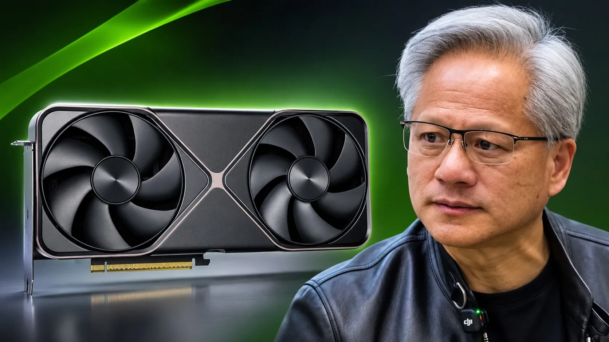
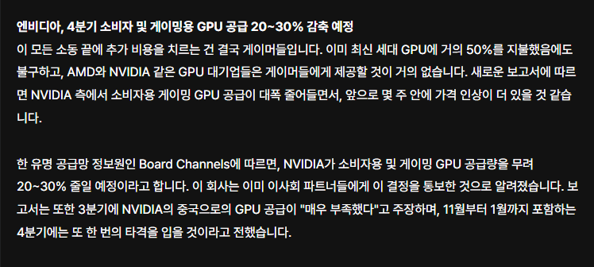
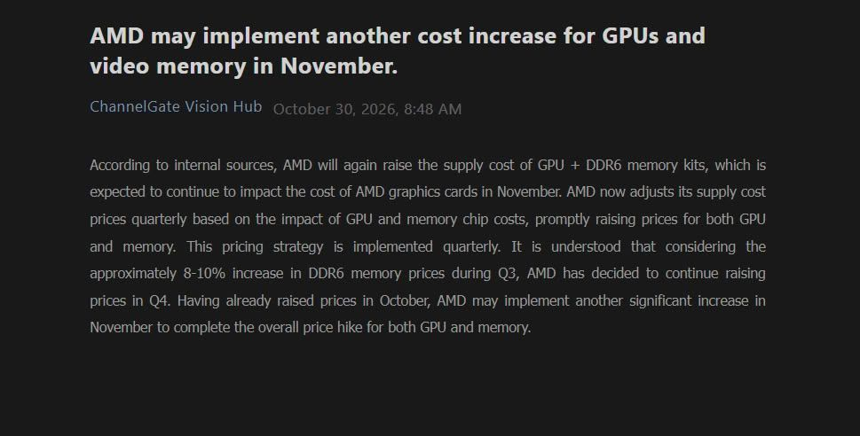

가죽잠바 황씨 : 뭐 저로 이상한거 많이뽑아서 그런것은 아니지만 일단 줄일겁니다
커머셜 그래픽카드 제조사 한테 칩셋트(GPU칩+GDDR7 패키지) 납품량 20~30% 감축예정
특히 홍콩쪽 AIB(조택,팰릿,컬러풀,이노3d 등등) 쪽은 아예 물량이 잠긴다는 소리도 도는중
참고로....

라데온도 곧있으면 인상이라고함.
이번주 신규 재고부터 적용이라는 이야기가 많이 돌고있음
한줄요약 : 에라이 모르겠다 컴퓨터야 오래가자
댓글
수집 당시 댓글 43개
렙벨코즈 · 13 시간 전
덜렁 · 13 시간 전
1060 쓰는 개붕이?
허무한자 · 13 시간 전
저게 맞긴 한게 게임업계가 최적화는 정말 개나주고 만들어댐
그래픽이 그만큼 좋아졌나 하면 몇년간 별 개선 없음
오히려 대작겜 아닌 회사들이 그래픽 좋은데 사양 덜타는걸 만들어댐
· 유메노아이카찹살젖통 · 4 시간 전
ㄹㅇ 요즘 게임들은 하드웨어가 좋으니 최적화 좆같이해서 비용절감함
잠시만요 · 13 시간 전
황사장 내 무습다
악덕팬더 · 13 시간 전
알았으니까 주가만 좀 올려다오
갸아악 · 13 시간 전
새우잡이배 · 13 시간 전
5070ti 든든합니다
고칼로리식단 · 13 시간 전
9070xt 우리 영원하자!!!
(진짜 영원해야됨)
· 정형외과병원부원장의원장 · 5 시간 전
나도 이거샀어... 반갑다
변막 · 13 시간 전
애미디진새끼
545787654 · 13 시간 전
9070xt야 우리 2040까진 같이하자
7렙이상은좀그래 · 13 시간 전
???: 돈 안되는 새끼들 꺼져
호러아니 · 13 시간 전
얘야 이게 가문 대대로 내려오는 5060TI 16GB란다...증조부께서 전력소모까지 아끼시면서 애지중지 다루셨지
유한락스 · 13 시간 전
사람은결국죽어 · 13 시간 전
보니까 소비자용으로 파는것보다 ai용으로 파는게 최소4배는 더남기네 ㅋㅋ
LazyPizza · 13 시간 전
게이밍용 글카 유통하던 회사들 또 죽게생겼네
· 익명
STCOM 이랑 이엠텍쪽은 아마 곡소리날듯함; 전부 홍콩 AIB 유통인데
· 아라그니아 · 4 시간 전
ㄹㅇ 탁탁몰 어떻하냐
homage · 12 시간 전
5060 중고로 팔아야 하는데 계속 오르니 못 팔겠네
· 익명
팔아도 90 80 70ti 만큼 재미도 못보고 그거이후에 그래픽카드 다시필요로하면
중고 판매가 배이상으로 각혈할수도 있음 가지고있으슈
걍둉 · 12 시간 전
얘야 옆집 애는 이번에 차를 뽑았다는데 넌 뭐 라텍스인지 RTX인지 뭘 샀다고? 잘 했다
번째드립인지 · 12 시간 전
그냥 3070ti 랩탑에서 포기하고 사는 중
페코미코멧 · 12 시간 전
98x3d 5070ti 1년전에 사서 정말 다행이다..
더위먹은 · 12 시간 전
Msi는 어떰?
장카설 · 12 시간 전
115에 4080산게 벌써 2달만 있으면 4년째가 되는데 이제 못 바꾸겠네...
장끼 · 12 시간 전
겜 업계도 좋은 그래픽이 곧 좋은 게임이라는 듯한 풍토도 좀 바뀌어야 됨
특히 aaa겜들 무지성으로 그래픽만 먼저 파고보는 느낌 없잖아 있음
조커박 · 12 시간 전
4070ti super야 영원히 함께가자.
게이브뉴웰 · 12 시간 전
밥타령총각 · 12 시간 전
중국글카가 먹는 미래는 안오도록 해다오
딩댕댕딩 · 11 시간 전
3080ti 오버클럭이고 전압다이어트고 뭐고 순정으로 오래오래 써야겠다
· 약간정신나감 · 9 시간 전
전압만 낮추자 ㅜㅜ
알림시끄러 · 10 시간 전
3060ti gta6 돌아갈까? ㅠㅠ
· 정형외과병원부원장의원장 · 5 시간 전
모던워페어4도 잘돌아가던데 하옵~중하옵까지도 버틸거라 봄
약간정신나감 · 9 시간 전
3060아..
써멀재도포 해줄게
K2C1 · 8 시간 전
983d 5070ti 램 64g ssd 2tb 작년 10월에 너넬 만나 참 다행이야 우리 오래가자
꺾이지않는마음 · 4 시간 전
2070이...2070년 까지라는 뜻이였구나
나도 그쯤이면 죽겠지 뭐...
파카사탕 · 2 시간 전
960, 750ti, 1060, 1660super, 그리고 2080..
R9오너 · 2 시간 전
5070ti 든~든.
레이ev · 2 시간 전
ㅅㅂ 5080 250에 살 수 있을때 샀어야 하는데
프로미스9 · 1 시간 전
아 5080 사놓을껄... 4070ti 잘버티자 ㅠ
다크에덴 · 46 분 전
갑자기 궁금한데 내가 qhd에 4070super 쓰는데
gta6상옵 60프레임 방어안된다고
fhd로 돌리면 둘중에 심적으로 뭐가이득일까
흐음 네이티브아니라 뿌옇게보이려나
품절남 · 25 분 전
모르겄다 해봐야 가끔 롤하는정도라 별생각은없는데 로컬 ai돌릴용으로 하나 필요하나? 생각이 들다가도
5090가격보면 손이안감 ㄷㄷ